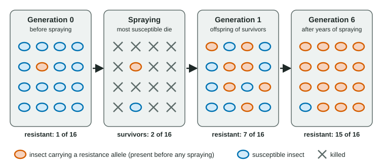

Continuing Evolution
Evolution continues today because environments keep changing, and it can be observed directly as changes in allele frequencies and genomes over generations.
Part 1 · Hook
Why this matters
In 2003, biologists on the Hawaiian island of Kauai noticed that the nights had gone quiet. Field crickets there are hunted by a fly that finds males by their song and lays its eggs on them. A mutation that leaves a male's wings unable to make sound had appeared, and within about 20 generations most males carried it. Evolution is not only something that happened long ago. You can watch it in crickets, mosquitoes, weeds, bacteria and viruses, often within a few years.
Part 2 · Before you start
What this builds on
Part 3 · Prerequisite check
Quick check before you start
1. A population of bacteria is treated with an antibiotic, and the survivors are mostly resistant. Where did the resistance come from?
- Resistant cells already present by chance survived and multiplied
- The antibiotic caused the cells to mutate in a useful way
- Each cell learned to resist after being exposed
Show the answer
Mutations arise at random. The antibiotic kills susceptible cells, so resistant ones that already existed are left to reproduce.
- Correct: Resistant cells already present by chance survived and multiplied:
- The antibiotic caused the cells to mutate in a useful way:
- Each cell learned to resist after being exposed:
2. In natural selection, which individuals contribute more alleles to the next generation?
- Those whose heritable traits help them survive and reproduce in the current environment
- The largest and strongest individuals in any environment
- Those that try hardest to adapt during their lives
Show the answer
Fitness depends on the environment: whichever heritable traits raise survival and reproduction there become more common.
- Correct: Those whose heritable traits help them survive and reproduce in the current environment:
- The largest and strongest individuals in any environment:
- Those that try hardest to adapt during their lives:
3. Why do RNA viruses such as influenza change faster than most cellular organisms?
- They copy their genomes without proofreading and make huge numbers of copies
- They avoid mutation entirely by copying themselves perfectly
- Their genes are stored in chromosomes inside a nucleus
Show the answer
Error-prone copying across billions of particles produces many variants, so viral populations change quickly.
- Correct: They copy their genomes without proofreading and make huge numbers of copies:
- They avoid mutation entirely by copying themselves perfectly:
- Their genes are stored in chromosomes inside a nucleus:
Part 4 · See it
See it first

Part 5 · Step by step
How it works, step by step
- Random mutations keep producing new alleles in every population, including some that happen to resist a drug, a pesticide or an immune response.Before any chemical is used, a few individuals already carry resistance alleles.
- People change the environment by using antibiotics, insecticides, herbicides or vaccines.Susceptible individuals die or reproduce less, while carriers of resistance alleles survive and reproduce.
- Carriers leave more offspring generation after generation.The resistance allele's frequency rises, often within a few years, because pests and microbes have short generations and huge numbers.
- When two species affect each other's survival, such as a toxic newt and the snake that eats it, a change in one is a new selective pressure on the other.Each evolves in response to the other (coevolution), so the arms race keeps going.
- Environments never stop changing, through new drugs, new hosts, climate change and other species evolving.Evolution continues, and scientists can measure it directly as changes in allele frequencies and genomes over time.
Part 6 · Key ideas
Key ideas
- Continuing evolution: populations keep evolving because environments keep changing. It can be measured now, in allele frequencies and genomes.
- Antibiotic and pesticide resistance: resistance alleles exist before the chemical is used; the chemical selects for them. Resistance often carries a cost, so it may fall slowly when the chemical stops.
- Viruses evolve fast: error-prone copying, huge numbers and short generations. Immunity and drugs select new variants, so flu vaccines are updated yearly and HIV is treated with several drugs at once.
- Coevolution: two species exert selective pressure on each other, as in an evolutionary arms race. Genomic changes, from point mutations to gene duplications, can be tracked by sequencing.
Part 7 · Misconception
A common mistake
The wrong idea: Insects exposed to an insecticide become resistant during their lives and pass that on.
What actually happens: An individual's genes do not change in response to the insecticide. Resistance alleles were already present by chance; the insecticide killed the insects without them, so the population changed over generations.
Part 8 · Check yourself
Check yourself
Exam-style questions. Anything you miss goes into your review queue.
Graph
Mosquitoes after insecticide-treated bed nets
In year 0, bed nets treated with a pyrethroid insecticide were handed out across a farming district. Each year researchers raised mosquitoes from larvae collected in the district. They exposed 200 adult females to a standard pyrethroid dose for 1 hour and recorded the percent alive 24 hours later (mean ± 2 SE of 8 tubes). They also tested 200 mosquitoes for the kdr allele, a version of a nerve sodium-channel gene that pyrethroids bind poorly, and report its frequency among all alleles of that gene.
Mosquitoes surviving the standard doseFrequency of the kdr allele
Data table
| Years after nets were handed out (years) | Mosquitoes surviving the standard dose (± error) | Frequency of the kdr allele (± error) |
|---|---|---|
| 0 | 4 ± 2 | 5 |
| 1 | 6 ± 2 | 7 |
| 2 | 11 ± 3 | 12 |
| 3 | 22 ± 4 | 21 |
| 4 | 38 ± 5 | 34 |
| 5 | 55 ± 5 | 48 |
| 6 | 68 ± 5 | 60 |
| 7 | 74 ± 4 | 68 |
| 8 | 77 ± 4 | 72 |
1. Between which two consecutive years did the frequency of the kdr allele rise the most?
- Year 3 to year 4
- Year 4 to year 5
- Year 5 to year 6
- Year 7 to year 8
Show the answer
Year-by-year rises: 3 to 4, 21 to 34 (13 points); 4 to 5, 34 to 48 (14 points); 5 to 6, 48 to 60 (12 points); 7 to 8, 68 to 72 (4 points). The largest is from year 4 to year 5.
- Year 3 to year 4: A rise of 13 points, close but one point less than from year 4 to year 5.
- Correct: Year 4 to year 5: Correct: 48 − 34 = 14 percentage points, the largest single-year rise.
- Year 5 to year 6: A rise of 12 points; the climb was already slowing.
- Year 7 to year 8: A rise of 4 points; by then the curve had nearly leveled off.
2. The kdr allele already had a frequency of 5% in year 0, before any nets were used. Which explanation best fits the data and how evolution works?
- The allele arose by random mutation before the nets, and the insecticide then favored mosquitoes already carrying it
- Mosquitoes that touched the nets formed the kdr mutation in response, and then passed it to their offspring
- The nets made each mosquito's sodium channels change shape gradually during its life, and the change was inherited
- The kdr allele was carried into the district by the nets themselves, which were made in a place with resistant mosquitoes
Show the answer
Variation comes first: the allele existed by chance before the insecticide arrived. The insecticide killed susceptible mosquitoes more often, so carriers left more offspring and the allele's frequency rose.
- Correct: The allele arose by random mutation before the nets, and the insecticide then favored mosquitoes already carrying it: Correct: random mutation supplies the allele; selection by the insecticide raises its frequency.
- Mosquitoes that touched the nets formed the kdr mutation in response, and then passed it to their offspring: Mutations are not produced on demand by the environment; the allele was present in year 0, before any nets.
- The nets made each mosquito's sodium channels change shape gradually during its life, and the change was inherited: Changes during an individual's life are not inherited; the sodium-channel gene itself must carry the change.
- The kdr allele was carried into the district by the nets themselves, which were made in a place with resistant mosquitoes: Nets carry no mosquitoes or genes; the allele was in the local population before the nets arrived.
3. In year 8 the nets are replaced with nets treated with an insecticide that acts on a different target. Mosquitoes carrying kdr survive slightly less well than others when no pyrethroid is present. Predict the kdr frequency over the next several years.
- It falls slowly, because carriers now have slightly lower fitness than other mosquitoes
- It stays at 72%, because the allele no longer affects survival once pyrethroids are gone
- It drops to zero within a year, because mosquitoes stop making the resistant channel when it is not needed
- It keeps rising toward 100%, because the new insecticide also kills the mosquitoes that lack kdr
Show the answer
Without pyrethroid the allele's benefit is gone but its small cost remains, so carriers leave slightly fewer offspring each generation and the frequency drifts down slowly, not instantly.
- Correct: It falls slowly, because carriers now have slightly lower fitness than other mosquitoes: Correct: a small cost with no benefit means slow decline.
- It stays at 72%, because the allele no longer affects survival once pyrethroids are gone: The stem says carriers survive slightly less well without pyrethroid, so the allele is no longer neutral.
- It drops to zero within a year, because mosquitoes stop making the resistant channel when it is not needed: Allele frequencies change across generations through differences in reproduction; individuals cannot switch their alleles off.
- It keeps rising toward 100%, because the new insecticide also kills the mosquitoes that lack kdr: The new insecticide acts on a different target, so kdr gives no extra protection against it.
Data table
A rabbit-killing virus and wild rabbits, 1951-1963
A virus that kills European rabbits was released in Australia in 1950 to reduce the number of wild rabbits there. Mosquitoes spread the virus by biting infected rabbits and then healthy ones. In each listed year, researchers (1) collected virus samples from wild rabbits and measured how lethal each was in lab rabbits never before exposed, and (2) caught young wild rabbits and infected them with one standard virus strain kept frozen and unchanged since the 1950s. The values are simplified for teaching, following the pattern of the field surveys.
| Year | Samples killing over 99% of lab rabbits (%) | Samples killing 70-99% (%) | Samples killing under 70% (%) | Wild rabbits killed by the standard strain (%) |
|---|---|---|---|---|
| 1951 | 100 | 0 | 0 | 90 |
| 1954 | 19 | 66 | 15 | 82 |
| 1957 | 6 | 74 | 20 | 61 |
| 1960 | 2 | 70 | 28 | 41 |
| 1963 | 1 | 68 | 31 | 30 |
4. Which explanation best accounts for the change in the virus?
- Rabbits with less lethal virus stayed alive and infectious longer, so mosquitoes spread that virus more
- The virus evolved to be less lethal so that it would not wipe out the rabbits it depends on
- Less lethal viruses copied themselves faster inside each rabbit, so they outgrew the most lethal type
- Lab rabbits became more resistant over the years, so the same viruses appeared less lethal in tests
Show the answer
The virus spreads only from living, infected rabbits through mosquito bites. A virus that kills its host within days has less time to be picked up, so moderately lethal types were passed on more and became common.
- Correct: Rabbits with less lethal virus stayed alive and infectious longer, so mosquitoes spread that virus more: Correct: transmission favors virus that keeps its host alive and infectious longer.
- The virus evolved to be less lethal so that it would not wipe out the rabbits it depends on: Evolution has no goal; the change came from which viruses were transmitted more, not from what would benefit the virus later.
- Less lethal viruses copied themselves faster inside each rabbit, so they outgrew the most lethal type: The most lethal types multiply fast within a rabbit; their problem is fewer chances to spread before the host dies.
- Lab rabbits became more resistant over the years, so the same viruses appeared less lethal in tests: The lab rabbits had never been exposed, so they were not selected for resistance.
5. Which data are the best evidence that the wild rabbits themselves evolved?
- Deaths from the unchanged standard strain fell from 90% to 30% of wild rabbits
- The share of virus samples killing over 99% of lab rabbits fell from 100% to 1%
- The share of virus samples killing under 70% of lab rabbits rose from 0% to 31%
- The share of samples killing 70-99% of lab rabbits rose from 0% to about 70%
Show the answer
The standard strain did not change, so fewer deaths in wild rabbits given it must reflect a change in the rabbits: survivors of earlier outbreaks passed on resistance alleles.
- Correct: Deaths from the unchanged standard strain fell from 90% to 30% of wild rabbits: Correct: the same virus kills fewer rabbits, so the rabbits changed.
- The share of virus samples killing over 99% of lab rabbits fell from 100% to 1%: This measures change in the virus, tested on never-exposed lab rabbits.
- The share of virus samples killing under 70% of lab rabbits rose from 0% to 31%: This also tracks the virus, not the wild rabbits.
- The share of samples killing 70-99% of lab rabbits rose from 0% to about 70%: This tracks the virus too; the lab rabbits did not change.
Model
A model of resistance in HIV
The model uses rounded numbers. In a person with untreated HIV, about 1010 new virus particles are made each day. Reverse transcriptase does not proofread, so copying errors are common. For each of three drugs (A, B and C), about 1 in every 105 new viral genomes carries a mutation that lets the virus resist that drug. The three kinds of mutation arise independently of each other.
| Quantity | Value |
|---|---|
| New virus particles per day (untreated) | 1010 |
| Share of new genomes resistant to drug A | 1 in 105 |
| Share resistant to drug B | 1 in 105 |
| Share resistant to drug C | 1 in 105 |
6. Why do doctors give all three drugs at the same time rather than one drug and then another when the first stops working?
- One at a time, virus resistant to the first drug multiplies until a mutant resistant to the next appears
- Giving the drugs one after another wears the patient's immune system down faster than giving them together
- Each drug works well just when the other two are present, because they bind one enzyme together
- Giving one drug at a time causes the virus to make new resistance mutations in response to each drug in turn
Show the answer
With one drug, about 100,000 resistant particles arise daily and take over. That large resistant population then produces mutants resistant to the next drug. Together, a particle must carry all three mutations at once, which the model predicts almost never happens.
- Correct: One at a time, virus resistant to the first drug multiplies until a mutant resistant to the next appears: Correct: one drug at a time lets resistance pile up mutation by mutation.
- Giving the drugs one after another wears the patient's immune system down faster than giving them together: The reason is about resistance in the virus, not about the immune system.
- Each drug works well just when the other two are present, because they bind one enzyme together: The model treats the three drugs as working on their own; their benefit together comes from the multiplied odds.
- Giving one drug at a time causes the virus to make new resistance mutations in response to each drug in turn: Mutations arise at random whether or not a drug is present; the drug selects among them.
7. Select the two observations that show evolution happening in a population today.
- The frequency of an allele in a wild population is measured each year and rises over 15 years
- Bacterial samples frozen in 1990 and in 2020 from one population differ by dozens of new mutations
- A single insect sprayed many times during its life becomes harder to kill
- A fossil shell from deep rock layers looks different from shells of the same kind alive today
- A wild population's average beak size stays the same while its habitat is unchanged
Show the answer
Evolution is a change in the genetic makeup of a population over generations. Allele frequencies tracked over years and genomes compared across decades show it directly.
- Correct: The frequency of an allele in a wild population is measured each year and rises over 15 years: A change in allele frequency across generations is evolution, measured as it happens.
- Correct: Bacterial samples frozen in 1990 and in 2020 from one population differ by dozens of new mutations: New mutations accumulating in a population's genomes over decades are evolution observed directly.
- A single insect sprayed many times during its life becomes harder to kill: Individuals do not evolve; an insect becoming harder to kill during its life is not a genetic change in a population.
- A fossil shell from deep rock layers looks different from shells of the same kind alive today: Fossils show evolution in the past, not change happening now.
- A wild population's average beak size stays the same while its habitat is unchanged: No change is reported, so this observation shows no evolution.
Part 9 · Summary
Summary
Evolution continues today because environments keep changing, and it can be observed directly as changes in allele frequencies and genomes over generations. Antibiotics, insecticides and herbicides select for resistance alleles that arose by random mutation before the chemical was used, so resistance spreads within years; when a resistance allele carries a cost, it can decline slowly once the chemical is withdrawn. Viruses evolve especially fast because they copy their genomes with many errors, in huge numbers and with short generations: immunity favors new flu variants, so vaccines are updated yearly, and HIV is treated with several drugs at once because a particle resistant to all of them is very unlikely to arise. In coevolution, two species are each other's selective pressures, as in the arms race between a toxic newt and a resistant snake. Long-term experiments and genome sequencing show mutations, duplications and other genomic changes accumulating and spreading as populations adapt.
Part 10 · Up next
What comes next
Part 11 · Connections